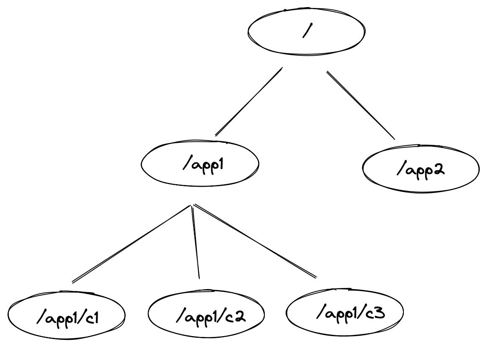
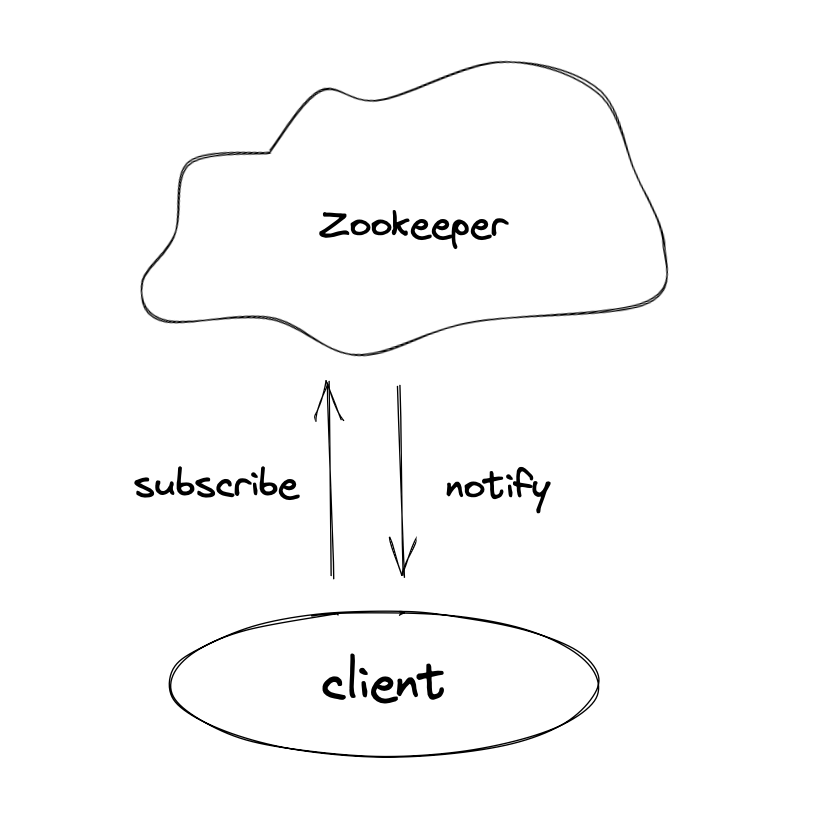
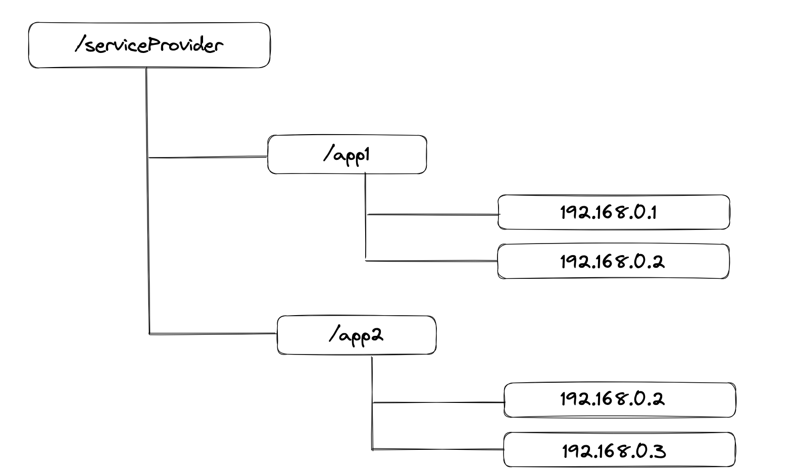
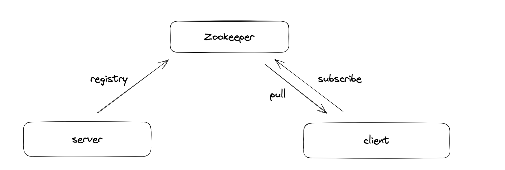
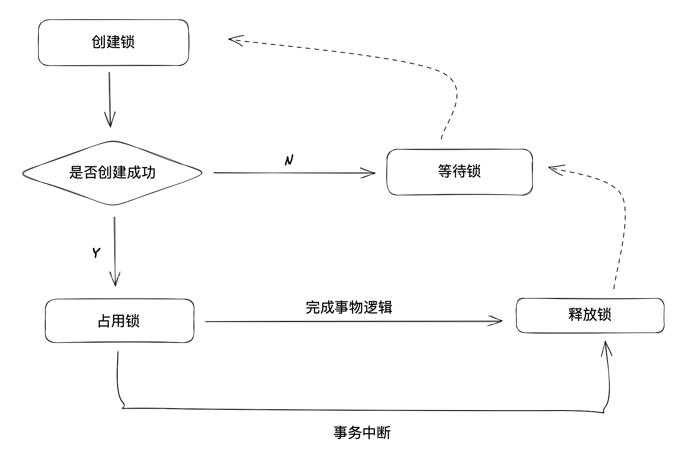
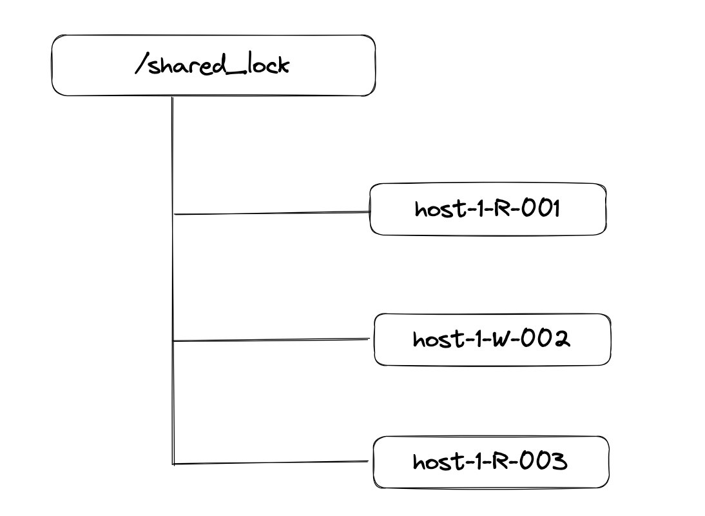
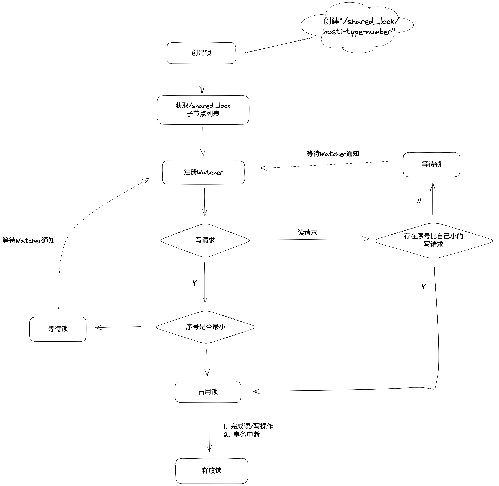

事务
在Zookeeper中
节点类型
-
持久节点(PERSISTENT)
该数据节点被创建后， ， -
持久顺序节点(PERSISTENT_SEQUENTIAL)
持久顺序节点的基本特性和持久节点是一致的， 。 ， 。 -
临时节点(EPHEMERAL)
和持久节点不同的是， ， ， 。 -
临时顺序节点(EPHEMERAL_SEQUENTIAL)
临时顺序节点的基本特性和临时节点是一致的,只是在此基础上添加了顺序特性。
Watcher----数据变更的通知
Zookeeper提供了分布式数据的发布/订阅功能

应用场景
1. 数据发布/订阅
客户端服务端注册自己需要关注的节点
如果将配置信息存放到ZooKeeper上进行集中管理
2. 服务发现与注册
服务端通过暴露服务接口和IP地址的绑定
My implementation: zookeeper registry & discovery


3. 分布式全局唯一ID
在单数据库场景下
4. Master选举
Master 选举是一个在分布式系统中非常常见的应用场景
在分布式系统中
在Zookeeper中
5. 分布式锁
分布式锁是控制分布式系统之间同步访问共享资源的一种方式
-
排他锁
通过调用客户端create接口， /exclusive_lock节点下创建临时子节点/exclusive_lock/lock。 ， ， ， /exclusive_lock下注册一个子节点变更的Watcher， ， 。 - 当获取锁的客户端完成处理
， - 如果获取锁的客户端发生宕机
， ，

- 当获取锁的客户端完成处理
-
读写锁
在获取共享锁时， ， ， ， ，

- 判断读写顺序
不同的事务都可以同时对同一个数据对象进行读取操作， 。 ： - 创建完节点后
， ， - 确定自己的节点序号在所有子节点中的顺序
- 对于读请求
如果没有比自己序号小的子节点， ， ， 。 ， 。 - 对于写请求
如果自己不是序号最小的子节点， 。 - 接收到 Watcher 通知后
， - 释放锁的过程和排他锁是一致的

- 判断读写顺序
-
羊群效应
如果每个节点都去监听最小的节点是否有变动， ， ， ， ， ， ， 。 - 改进
- 读请求
向比自己序号小的最后一个写请求节点注册Watcher监听 - 写请求
向比自己序号小的最后一个节点注册Watcher监听
- 读请求
- 改进